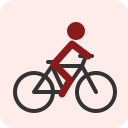

Mattias Skjelmose

Dorsal 81
26/09/2000 – Dinamarca

Dorsal 81
26/09/2000 – Dinamarca
Dorsal 82
17/03/1992 – Francia
Dorsal 83
09/09/1996 – Alemania
Dorsal 84
13/10/1991 – Austria
Dorsal 85
29/08/1993 – Italia
Dorsal 86
05/05/1997 – Dinamarca
Dorsal 87
12/11/2002 – Bélgica
Dorsal 88
18/12/1995 – Dinamarca